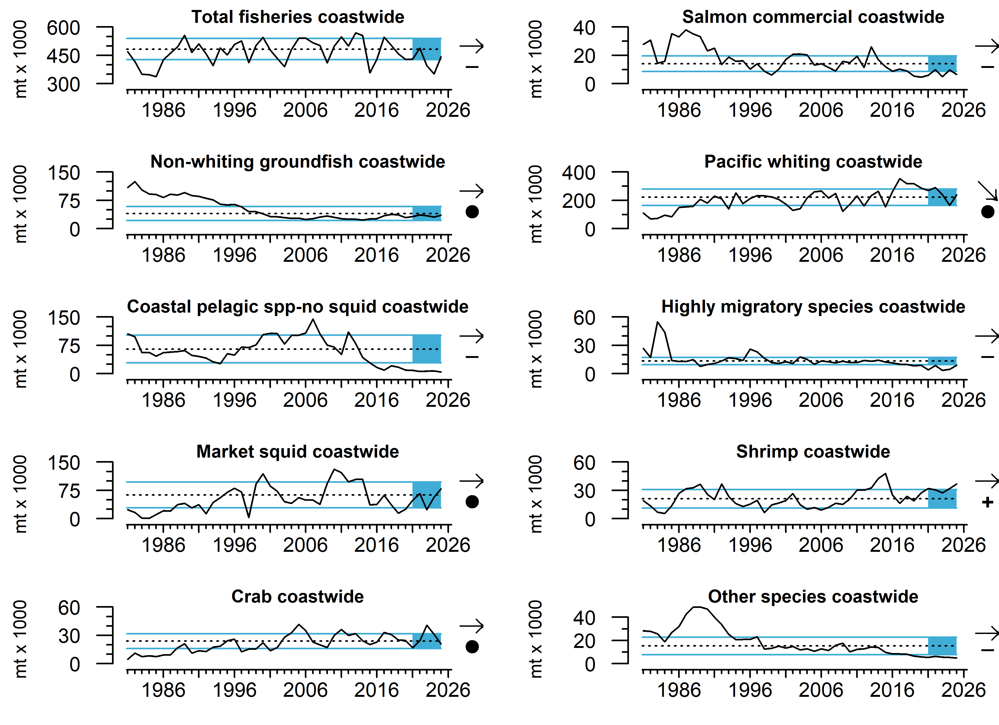

In 2025, coastwide total landings increased 26% from 2024, although the most recent five-year average remained >1 s.d. below the long-term average. Landings from crab (-33%) fisheries decreased in 2025 from 2024. Over the past five years, shrimp landings were >1 s.d. above the long-term average, while salmon, CPS finfish, HMS and Other species landings were below long-term averages.

Annual coastwide landings of commercial Dungeness crab fishery from 1981-2025. Commercial fisheries landings data were downloaded from PacFIN (https://pacfin.psmfc.org/) on January 10, 2025.